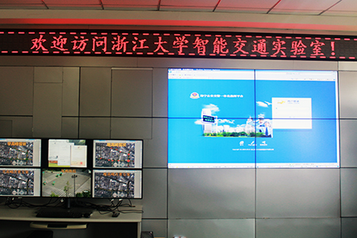

实验室简介

浙江大学控制科学与工程学系智能交通实验室是王慧教授课题组由2000年左右组建的，目前共有教授2人，副教授1人，硕士8人，主要研究方向包括交通流理论、城市交通诱导和控制、视频检测、车联网信号控制等。十多年来，课题组先后承担了包括国家级、省级自然科学基金、国家“863”计划以及在内的国家级项目多项，发表学术论文80余篇，其中SCI/EI/ISTP检索20余篇。迄今为止，智能交通课题组共培养博士研究生8人、硕士研究生30余人，为高校和社会输送了大量优秀的高技术人才。课题组同时也在杭州，诸暨，绍兴等中小型城市中，针对交通控制和管理提供参考意见。